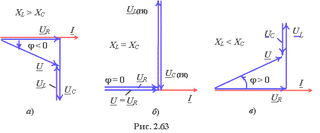

Векторные диаграммы напряжений цепи до режима резонанса (а), при резонансе (б) и после режима резонанса (в) представлены на рис. 2.63.
Отметим, что при добротности Q > 1 векторы напряжения на индуктивном UL и ёмкостном UC элементах при РН (рис. 2.63б) больше вектора входного напряжения U. Причиной возникновения больших напряжений на реактивных элементах при РН является ЭДС самоиндукции eL = −Ldi/dt индуктивной катушки, которая пропорциональна не току, а скорости его изменения. Напряжение на ёмкостном элементе uС при РН компенсирует напряжение uL = −eL на индуктивном элементе. Поэтому для источника энергии контур − чисто резистивная нагрузка.
